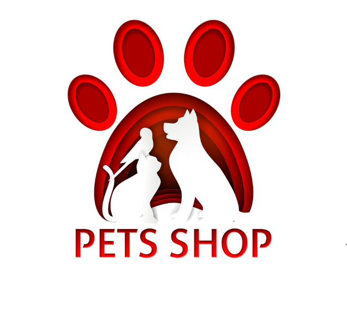

Về Chúng Tôi
Công Ty Cổ Phần PetsShop -- Hệ thống nhân giống, kinh doanh thú cưng và các loại phụ kiện vật nuôi, cung cấp thức ăn, phụ kiện chó mèo.
Đến thời điểm hiện tại PetsShop đã xuất bán chó, mèo cảnh cho các khách hàng tại nhiều quốc gia trên thế giới, như: Indonexia, Thái Lan, Malaysia, Singapore, Hàn Quốc, Nga, Đức, Phần Lan.
Tại Việt Nam, PetsShop là đối tác hàng đầu cung cấp con giống chó cảnh, mèo cảnh thuần chủng cho các trại nuôi sinh sản, Shop kinh doanh chó cảnh trên toàn quốc.
Mục tiêu hoạt động
“Chúng tôi cam kết đặt sức khỏe và cuộc sống của thú cưng lên trên hết trong toàn bộ hoạt động của PetsShop”
Cam kết trách nhiệm
PetsShop đang cung cấp cho các gia đình những thú cưng mà họ chưa từng gặp mặt. Đó là một trách nhiệm to lớn đòi hỏi chúng tôi phải thực hiện rất nghiêm túc. Chính vì vậy, trong nhiều năm qua chúng tôi đã sàng lọc, lựa chọn và phát triển mối quan hệ hợp tác với các nhà nhân giống chuyên nghiệp, trung thực ở cả trong và ngoài nước (Nga, Ucraina, Ba Lan, Pháp…). Từ đó có thể chọn lọc và đem đến những thú cưng có phẩm chất tốt nhất đến cho khách hàng.
Chúng tôi chịu trách nhiệm tiêm vắc xin đầy đủ cũng như chuẩn bị các tài liệu cần thiết và sắp xếp việc vận chuyển, kiểm tra y tế và làm thủ tục hành chính với các cơ quan, chính quyền (nếu cần) để đưa cún cưng nhanh nhất về với gia đình mới.
Không chỉ có vậy, chúng tôi sẽ luôn đồng hành từ chăm sóc, huấn luyện, cung cấp phụ kiện và tư vấn trọn đời đối với sự phát triển của thú cưng. Đây là cam kết của chúng tôi với tất cả khách hàng.
Lĩnh vực hoạt động
– Cung cấp các loại chó, mèo cảnh
– Cung cấp phụ kiện, thức ăn cho thú cưng.
– Chăm sóc, huấn luyện thú cưng
– Tư vấn trọn đời